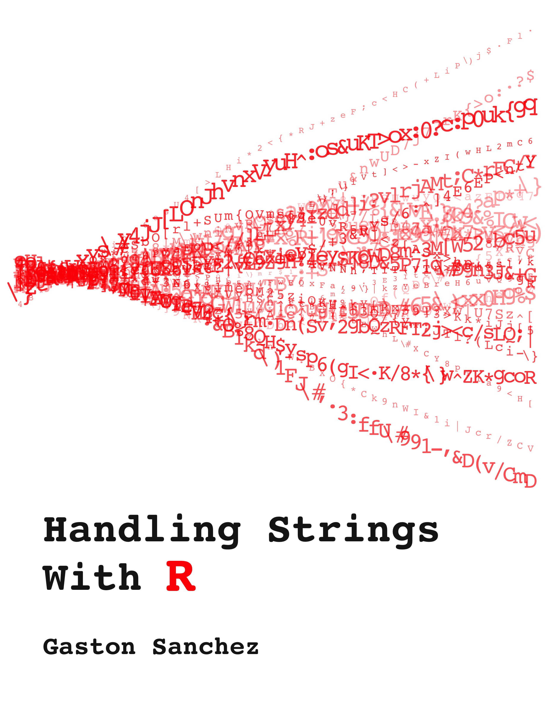

Handling Strings in R
Gaston Sanchez
2017-10-28
Preface

This book aims to provide a panoramic perspective of the wide array of string manipulations that you can perform with R. If you are new to R, or lack experience working with character data, this book will help you get started with the basics of handling strings. Likewise, if you are already familiar with R, you will find material that shows you how to do more advanced string and text processing operations.
Despite the fact that R may not be as rich and diverse as other scripting languages when it comes to string manipulation, it can take you very far if you know how. Sadly, documentation on how to manipulate strings and text data in R is very scarce. This work is my two cents to increase the number of available resources about this indispensable topic for any data scientist.

This work is licensed under a Creative Commons Attribution-NonCommercial-ShareAlike 4.0 International License.